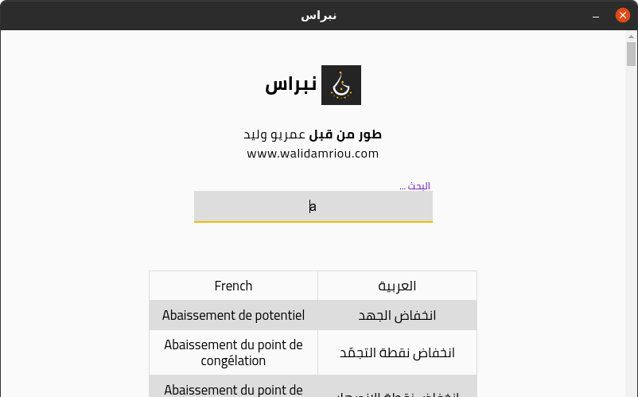

يمكنك من خلال هذه الصفحة تنزيل مختلف إصدارات تطبيق نبراس لسطح المكتب
يمكنك عبر هذا التطبيق البحث عن الكلمة المراد ترجمتها في مكان واحد بالعربية أو الفرنسية
تصميم التطبيق لا يتغير بين مختلف أنظمة التشغيل المدعومة أي أن نفس التصميم على لينكس، وينداوز وماك أو أس
التطبيق يعمل بدون الحاجة للإنترنات
إذا كنت ترى بأن هناك مشكلة في التطبيق يمكنك التواصل معي عبر الروابط أدناه

لمستخدمي لينكس
snapcraft ثبته من خلال متجر
أو إستخدم الطرفية
sudo snap install nibras
لمستخدمي Windows
نزل ملف التثبيت
لمستخدمي MacOS
نزل ملف التثبيت
يتم تطوير هذا المشروع من قبل عمريو وليد
مهندس أنظمة مدمجة ومطور برمجيات، حاصل على شهادة ماستر في الأنظمة المدمجة وشهادة ليسونس في الإلكترونيات
تم الحصول على تصريح تطوير هذا العمل من قبل المالك الأصلي لفكرة المشروع، الدكتور طه زروقي